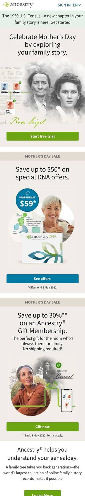
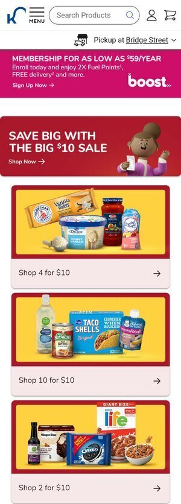

PARC: Proximity
Stark Bro's Nurseries & Orchards Co.
Stark Bro's Nurseries and OrchardsThe design principle of proximity is exemplifed on this page because they have very clearly identified pictures of the item they are selling along with the name, price, and reviews.
PARC: Repetition
Ancestry.com
Ancestry.com
Ancestry.com has acheived the principle of repetition for years by their use of a leaf. It's small, but it's something that whenever I think of a leaf, I can't help but think of Ancestry.com. It's rather an impressive feat, in my opinion.
PARC: Contrast
Kroger
Kroger.com
Kroger uses contrast in their website to frame their deals so that you only see one at a time. I think it's highly effective.